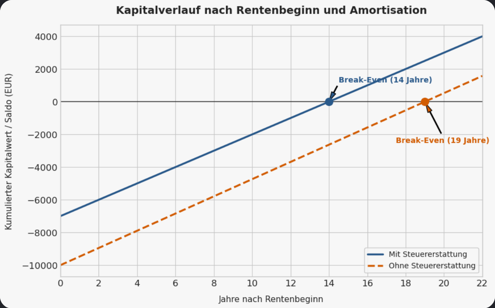

Die freiwillige Einzahlung in die gesetzliche Rentenversicherung (GRV) zum Ausgleich von Rentenabschlägen (§ 187a SGB VI) hat sich von einem vermeintlich unrentablen Relikt zu einer ernstzunehmenden Assetklasse für risikobewusste Investoren gewandelt. Die harten Rahmendaten für das aktuelle Zeitfenster lauten: Für den Kauf eines vollen Entgeltpunkts müssen Privatanleger aktuell rund 9.661,58 Euro aufwenden. Im Gegenzug generiert dieser Punkt eine lebenslange, garantierte Bruttorente von derzeit exakt 42,52 Euro pro Monat (aktueller Rentenwert, gültig seit 1. Juli 2026). Aus Sicht der Portfolio-Theorie wirft dies fundamentale Allokationsfragen auf: Wie hoch ist die reale Amortisationsdauer? Wie schlägt sich dieser Deal im Vergleich zu einem inflationsgeschützten Tagesgeldkonto oder einem breit diversifizierten Aktien-Depot unter Berücksichtigung des Sequence of Returns Risk?
1. Die reine Amortisations-Arithmetik: Wann ist der Break-Even erreicht?
Um die fundamentale Rentabilität des Rentenpunktekaufs zu bestimmen, müssen wir die mathematische Amortisationsdauer (ohne Berücksichtigung von Steuern und zukünftigen Rentenanpassungen) berechnen.
- Die Grundformel: Investitionssumme dividiert durch die jährliche Bruttorente.
- Die Zahlen: 9.661,58 Euro / (42,52 Euro x 12 Monate) = 9.661,58 Euro / 510,24 Euro pro Jahr = 18,94 Jahre.
Das bedeutet rein mathematisch: Der Anleger muss nach dem offiziellen Renteneintritt mindestens 19 Jahre lang leben, um sein eingezahltes Nominalkapital brutto wieder zurückzuerhalten. Erreicht man den Break-Even mit beispielsweise 65 Jahren, ist die Investition ab dem 84. Lebensjahr in der reinen Gewinnzone.
Der steuerliche Hebel (die Sonderausgaben)
In der Realität verkürzt sich diese Amortisationszeit durch das Einkommensteuergesetz (EStG) dramatisch. Freiwillige Einzahlungen in die GRV können zu 100 % als Sonderausgaben (Vorsorgeaufwendungen) steuerlich geltend gemacht werden. Bei einem angenommenen moderaten persönlichen Steuersatz von 30 % holt sich der Anleger rund 2.898 Euro über die Steuererklärung vom Finanzamt zurück. Die effektive Nettoinvestition sinkt dadurch auf ca. 6.763 Euro. Die reale Amortisationszeit schrumpft dadurch auf rund 13 bis 14 Jahre (Break-Even mit ca. 78 bis 79 Jahren), wie die Grafik unten zeigt.

2. Der unschlagbare Vorteil: Der eingebaute, automatische Inflationsausgleich
Im direkten Vergleich zu einem Tagesgeldkonto oder einer privaten Rentenversicherung zieht der Rentenpunkt ein gigantisches Ass aus dem Ärmel: die gesetzlich verankerte Koppelung an die Lohnentwicklung (§ 65 SGB VI).
- Legst du die 9.661 Euro auf ein Tagesgeldkonto, frisst die Inflation die Kaufkraft deines Kapitals unbarmherzig auf. Sinken die Marktzinsen, schmilzt deine Rendite dahin.
- Die gesetzliche Rente hingegen betreibt einen automatischen Inflationsausgleich. Steigen die Löhne und Preise in Deutschland, erhöht der Staat den Rentenwert (42,52 Euro) dynamisch im Hintergrund. Die Kaufkraft deiner monatlichen Auszahlung bleibt über Jahrzehnte hinweg real geschützt. Das kann kein Sparbuch der Welt garantieren. Es gibt auch eine eingebaute Untergrenze: Die Rentengarantie (§ 68a SGB VI) verhindert gesetzlich, dass der Rentenwert jemals sinkt, er kann nur steigen oder gleich bleiben.
3. Der Kapitalmarkt-Vergleich: Höhere Rendite vs. Sequence of Returns Risk
Ein weltweit gestreuter Welt-ETF (z. B. MSCI World) liefert historisch eine durchschnittliche Rendite von rund 7 % pro Jahr und schlägt die Rendite der gesetzlichen Rentenversicherung (die real meist bei 2 % bis 3 % liegt) um Längen. Wer die 9.661 Euro für 20 Jahre in einen ETF steckt, besitzt mathematisch am Ende ein Vielfaches.
Doch kurz vor dem Renteneintritt schlägt das fundamentale Sequence of Returns Risk (Renditenreihenfolge-Risiko) zu:
- Wenn der Aktienmarkt exakt in deinen ersten zwei Rentenjahren um 40 % einbricht und du gezwungen bist, Anteile deines Depots für den Lebensunterhalt zu verkaufen, zerstört dieser Substanzverlust den Zinseszins-Effekt deines verbleibenden Vermögens dauerhaft. Das Depot läuft Gefahr, vorzeitig leer zu sein.
- Die gesetzliche Rente kennt dieses Risiko nicht. Sie liefert den Cashflow absolut schwankungsfrei, unabhängig davon, ob die Börsen gerade crashen oder boomen.
Dieser Deal ist nicht universell rational. Ist die Lebenserwartung durch eine schwere Krankheit deutlich verkürzt, wird der Break-Even womöglich nie erreicht. Einmal eingezahlt, ist das Geld unwiderruflich im Rentensystem gebunden — du kommst vor Rentenbeginn unter keinen Umständen wieder heran. Und wer bereit ist, Marktschwankungsrisiko zu tragen und einen langen Horizont hat, schlägt mit einem breiten globalen Aktien-ETF historisch die Rendite, allerdings komplett ohne Garantien. Für das eingezahlte Kapital gibt es aber ein Teil-Sicherheitsnetz: Im Todesfall erhalten Ehepartner oder eingetragene Lebenspartner daraus eine anteilige Witwen- oder Witwerrente — das Geld ist nicht einfach komplett verloren.
4. Der direkte Systemvergleich: Die Besteuerung in der Auszahlungsphase
Neben der Amortisation entscheidet eine Frage über den wahren Gewinner: Was nimmt sich das Finanzamt, wenn das Geld tatsächlich fließt — entweder als Monatsrente oder als ETF-Entnahme? Die beiden Systeme werden komplett unterschiedlich besteuert.
Die gesetzliche Rente: die steigende Besteuerungstreppe
Die Besteuerung der gesetzlichen Rente wird schrittweise auf 100 % umgestellt. Das Wachstumschancengesetz (2024) hat dieses Wachstum auf 0,5 Prozentpunkte pro Jahr verlangsamt (ausgehend von 82,5 % für den Rentenjahrgang 2023), wodurch die volle Besteuerung erst um 2058 statt 2040 erreicht wird. Der steuerpflichtige Anteil hängt vom tatsächlichen Renteneintrittsjahr ab, nicht vom heutigen Datum, und wird für diesen Jahrgang lebenslang festgeschrieben.
Wer beispielsweise 2031 (in 5 Jahren, mit 65) in Rente geht, muss 86,5 % seiner Rente mit der Einkommensteuer versteuern — nicht die in vereinfachten Übersichten manchmal genannten 83 bis 85 %. Dazu kommt ein Abzug von rund 12,35 % für die gesetzliche Kranken- und Pflegeversicherung (ca. 8,75 % Krankenversicherungs-Eigenanteil plus 3,6 % Pflegeversicherung), der direkt von der Bruttorente abgeht. Was nach beiden Abzügen übrig bleibt, liegt oft spürbar unter der naiven Erwartung.
Der ETF: Kapitalertragsteuer und Teilfreistellung
Beim ETF greift die Abgeltungsteuer von 26,375 % (25 % plus Solidaritätszuschlag, ohne Kirchensteuer; mit Kirchensteuer steigt der effektive Satz weiter, die persönliche Höhe mit einem Steuerberater klären). Aber das Steuersystem schützt Aktien-Anleger über zwei Mechanismen:
- Teilfreistellung (30 % steuerfrei): Bei einem reinen Aktien-ETF sind 30 % aller Gewinne komplett steuerfrei. Die 26,375 % Steuer fallen also nur auf die restlichen 70 % des Gewinns an. Die effektive Steuerbelastung auf den Gesamtgewinn sinkt damit auf rund 18,46 %.
- Substanzschonung: Besteuert wird beim Verkauf nur der reine Gewinnanteil, nicht das eingezahlte Kapital. Wenn du im ersten Jahr nur einen kleinen Betrag entnimmst, ist der Gewinnanteil darin sehr gering — du zahlst in den ersten Jahren fast gar keine Steuern.
Selbst ausprobieren: der Vergleichsrechner
Dieser Rechner deckt beide Pfade gleichzeitig ab, mit derselben Ausgangssumme. Er berechnet den steuerpflichtigen Rentenanteil dynamisch für dein tatsächliches Renteneintrittsjahr, genau wie oben beschrieben, nicht als starre Faustregel.
Vereinfachte Beispielrechnung, keine Anlage- oder Steuerberatung. Der steuerpflichtige Rentenanteil wird dynamisch für das tatsächliche Renteneintrittsjahr berechnet (0,5 Prozentpunkte pro Jahr ab 82,5 % in 2023, laut Wachstumschancengesetz). KV/PV-Abzug auf die Rente mit rund 12,35 % angenähert (8,75 % Kranken- + 3,6 % Pflegeversicherung). Die ETF-Besteuerung nutzt die 26,375 % Abgeltungsteuer mit 30 % Teilfreistellung für Aktien-ETFs (effektiv 18,46 %), Kirchensteuer nicht enthalten. Reale Werte weichen ab, und diese Sätze ändern sich periodisch.
Wer gewinnt wann?
Der ETF gewinnt, wenn...
- du mit 65 Jahren volle Flexibilität willst (z. B. das gesamte Geld auf einmal für eine Reise oder ein neues Auto entnehmen).
- du die Jahre bis zur Rente nutzen willst, um dem Kapital beim Wachsen zuzusehen.
- dir wichtig ist, dass das Restkapital beim plötzlichen Tod zu 100 % an Kinder oder Enkel vererbt wird.
Die Rentenpunkte gewinnen, wenn...
- du den Steuer-Bonus sofort voll mitnimmst und die Erstattung direkt wieder in dein ETF-Depot steckst — diese Kombination ist der maximale Optimierungs-Hebel.
- du sehr alt wirst (Rentenpunkte sind eine Langlebigkeitsversicherung; ein ETF-Depot kann im hohen Alter leer sein, die Rente nicht).
- du absolute Sicherheit willst und keine schlaflosen Nächte wegen eines möglichen Crashs kurz vor Renteneintritt haben möchtest.
Wenn du den steuerlichen Sofort-Effekt nutzen möchtest, ist zuerst eine Frage wichtig: Reicht dein zu versteuerndes Einkommen im Zahlungsjahr überhaupt aus, um die volle Summe steuermindernd anzusetzen? Vorsorgeaufwendungen sind bis zu einer großzügigen jährlichen Obergrenze als Sonderausgaben absetzbar, aber der Abzug kann deine Steuerlast immer nur bis auf null senken — er kann keine Erstattung erzeugen, die höher ist als das, was du tatsächlich geschuldet hättest. Ist dein zu versteuerndes Einkommen in diesem Jahr niedrig (etwa durch Teilzeit, eine Auszeit, oder weil du kurz vor der Rente schon weniger verdienst), bleibt ein Teil des Abzugs womöglich ungenutzt. Prüfe deine konkreten Zahlen vor einer großen Einmalzahlung mit einem Steuerberater.
Fazit: Die Diagnose für dein Altersvorsorge-Setup
Der Kauf von Rentenpunkten ist kein Relikt für die ältere Generation, sondern ein hochgradig rationales Instrument zur Absicherung der Basis-Existenz. Er funktioniert finanzmathematisch wie der Kauf einer inflationsgeschützten, staatlich garantierten Leibrente mit sofortigem Steuervorteil.
Nutze die renditestarken Welt-ETFs in der jahrzehntelangen Ansparphase, um dein Vermögen maximal zu maximieren. Wenn du dich jedoch dem Rentenalter näherst (ab dem 50. Lebensjahr ist der Kauf von Rentenpunkten legal möglich), ist das Umschichten von Teilbeträgen in die gesetzliche Rentenkasse ein genialer risikoadjustierter Move. Du eliminierst das Sequence of Returns Risk der Börse für deine Grundbedürfnisse und baust dir ein unzerstörbares, inflationssicheres Fundament für das absolute Endgame deines Lebens.
Quellen: § 187a SGB VI zum Ausgleich von Rentenabschlägen; § 65 SGB VI zur jährlichen Rentenanpassungsformel; § 68a SGB VI zur Rentengarantie (Untergrenze); aktuelle 2026er-Zahlen (9.661,58 Euro pro Punkt, Durchschnittsentgelt 51.944 Euro, Beitragssatz 18,6 %; Rentenwert 42,52 Euro seit 1. Juli 2026, gestiegen von 40,79 Euro, eine Erhöhung um 4,24 %); § 22 EStG und das Wachstumschancengesetz (2024) zur Rentenbesteuerungsquote (0,5 Prozentpunkte pro Jahr ab 82,5 % in 2023); § 249a SGB V zur KVdR-Beitragsteilung (7,3 % Eigenanteil plus halber durchschnittlicher Zusatzbeitrag); § 20 EStG und § 20 InvStG zur Abgeltungsteuer und der 30-%-Teilfreistellung für Aktienfonds. Dies ist Bildungsinhalt zur Altersvorsorge-Mathematik und Besteuerung, keine Finanz- oder Steuerberatung — vor einer Kaufentscheidung eine verbindliche individuelle Auskunft bei der Deutschen Rentenversicherung einholen und einen Steuerberater konsultieren. Hinweis: Bewertungszahlen, Beitragssätze und die Rentenbesteuerungsquote werden periodisch angepasst, aktuelle Zahlen vor Verlass darauf gegenprüfen.
Passend dazu auf diesem Blog: